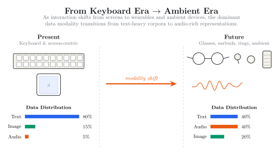
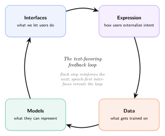
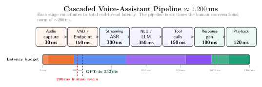
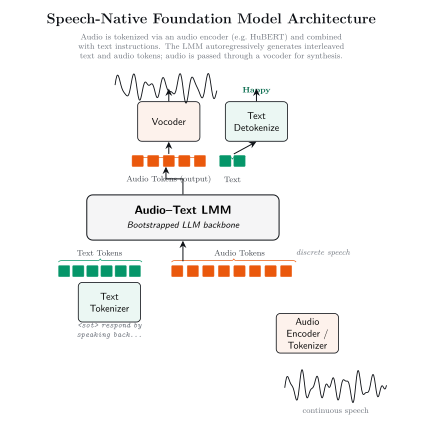

ms
GPT-4o speech-to-speech latency
(within human conversational range)
(within human conversational range)
Text dominates AI not because it is cognitively natural, but because decades of interface design conditioned us to express knowledge through keyboards and search boxes. Recent advances in speech recognition and multimodal foundation models have removed the technical barriers to voice-based interaction; what remains is primarily a habit problem. As voice becomes habitual, the data ecosystem underlying ML will shift toward speech-native knowledge — with profound implications for model architecture, training efficiency, and evaluation paradigms.
The ML community should prioritize building speech-native foundation models — architectures that learn from audio as a first-class modality rather than grafting speech onto text-pretrained systems — because the data ecosystem underlying AI is poised to shift toward speech-first knowledge generation.
This page distills the paper's argument into interactive visualizations: the data-distribution shift, the technical readiness, the habit barrier, the counterarguments we address, and the call to action for researchers, industry, and the broader community.
As interaction shifts from keyboard- and screen-based inputs toward speech-first wearables and ambient devices, the dominant data modality transitions from text-heavy corpora to audio-rich representations. Models trained on yesterday's data distribution will be increasingly misaligned with tomorrow's.

① Interfaces shape expression. Search boxes condition users to express queries as keyword lists; voice enables natural language questions with context and nuance.
② Expression shapes data. What users externalize becomes the training corpus for future models.
③ Data shapes models. The modalities, structures, and biases in training data determine what AI systems learn and how they represent knowledge.
Each step reinforces the next. Speech-first interfaces are how we reroute the loop.

For short queries, both modalities are roughly comparable. But as expressiveness rises — emotion, multi-turn reasoning, long compositions — typing scales non-linearly. Speech remains nearly flat. This crossover is where adoption tips.
faster than smartphone typing — ~153 WPM spoken vs ~52 WPM typed (Ruan et al., 2016).
Speech doesn't just save time. It changes what users are willing to express in the first place.
Speech recognition has transformed from a research curiosity into infrastructure: accurate enough for deployment, efficient enough for on-device, scalable enough to process the world's audio. The remaining gap is architectural — speech is accessible to LLMs, but not yet native.
Audio is converted to text, processed by a text-trained LLM, and synthesized back to speech. Paralinguistic information — tone, emphasis, hesitation, emotion — is discarded at the bottleneck.
Audio tokens are processed directly by the foundation model alongside text tokens; the model emits interleaved audio + text and a vocoder synthesizes voice. Paralinguistic information is preserved.
Each stage of a cascaded pipeline contributes to total latency, far exceeding the ~200ms human conversational norm.

A key architectural pattern: an LLM checkpoint serves as the foundational backbone, extended with custom modal tokens. Audio is discretized into tokens (via HuBERT or wav2vec 2.0) and interleaved with text. The model autoregressively produces both — audio passed through a vocoder for synthesis, text emitted directly.

From supervised speech-only systems to self-supervised multimodal architectures jointly processing audio, text, and vision — fewer labels, more modalities.
If the technical barriers have largely been removed, why hasn't voice replaced text? The cognitive and behavioral cost of switching from a familiar workflow to an unfamiliar one — even when the new workflow is objectively superior — is the primary friction. This is a human problem with technical consequences.
Human conversation has gaps clustered tightly around ~200ms. Today's voice assistants typically respond in ~900–1,000ms — feeling slow, prompting interrupts and disengagement.
Accuracy & robustness · Latency & endpointing · Noise & environmental factors · Out-of-domain generalization. ASR is at near-human WER on standard benchmarks; remaining gaps are accent and domain coverage.
Public awkwardness · Privacy perception · Shared spaces. 100% of voice users in our survey reported using it at home, but only 25% at work and even fewer in public.
Habit inertia · Discoverability · Trust calibration. Decades of typing have made it feel "natural" — but naturalness is acquired, not inherent. Many users simply forget the capability exists.
As long as users default to text, the data ecosystem stays text-dominated, reinforcing text-centric model development. Breaking the cycle requires either compelling interfaces or models that can learn from speech that already exists — podcasts, meetings, lectures, voice messages.
We conducted an informal survey (N=200) of voice interface users — illustrative evidence, not statistically representative. The pattern is revealing: the top barriers (slowness, accuracy) are technical issues that are rapidly improving. The persistent ones are behavioral and social.
Among those who rated recognition quality, only 6% described it as "Great" while 69% rated it "Average." Technical improvements alone are insufficient: voice interfaces must also address user perception, social context, and discoverability to achieve mainstream adoption.
Position papers earn their keep by engaging serious counterarguments. Here are the four strongest objections to a speech-first agenda, and how we address each.
This argument optimizes for the current cost ratio, which is fixed. Self-supervised learning has already collapsed audio processing costs — wav2vec 2.0 and HuBERT enable training on audio without transcription labels. Hierarchical tokenization (AudioLM, SoundStorm) compresses audio to 50–75 tokens/sec, approaching text density. The question is not which modality is cheaper today, but which will be more representative tomorrow.
This reflects a text-centric definition of "what matters." For many real-world applications — customer service, healthcare, education, mental-health support — emotional state and speaker intent are central, not peripheral. Sarcasm, rhetorical questions, and emphasis change meaning without changing words.
We agree text has real advantages — privacy in shared spaces, scannability, archival. Our position is not that speech replaces text. It's that the proportion of knowledge generated via speech will grow, and models should be prepared for a data ecosystem where both modalities are common, rather than treating text as the default and speech as an edge case.
QWERTY persisted because the switching cost exceeded the benefit. For speech, the switching cost is lower (no new skill to learn) and the benefit higher (3× input speed, hands-free, accessibility). The shift is already visible: voice search queries exceed 20% of mobile searches; smart-speaker adoption is growing; voice messaging is exploding worldwide. The question is not whether speech usage will grow, but how fast — and whether the ML community will be prepared.
The preceding analysis motivates specific actions. Three audiences, three agendas — but a shared direction.
Current evaluation suites (GLUE, SuperGLUE, MMLU) are text-centric. We need benchmarks measuring reasoning over audio — comprehension, summarization, QA on audio inputs without intermediate text. ProfASR-Bench (Piskala, 2025) is one example.
Rather than fine-tuning text-trained models on audio, investigate what happens when models are pretrained on audio from the start. Does it produce different representational structures? Does it generalize differently downstream?
Move beyond phonetic tokenization (HuBERT, wav2vec) toward representations that preserve meaning and paralinguistic information — audio encoders whose latent spaces reflect semantic similarity, not just acoustic similarity.
The podcasts, meetings, and voice messages being generated today are tomorrow's training data. Building pipelines to collect, clean, and curate speech — with appropriate consent and privacy protections — is a strategic investment.
Rather than retrofitting voice onto text-designed products, design experiences where speech is the primary modality. This generates training signal for speech-native models and shifts user habits.
GPT-4o and Gemini Live are proprietary. The research community needs open alternatives to study speech-native architectures, identify failure modes, and iterate on designs.
Current speech corpora overrepresent English and standard accents. Expanding to underrepresented languages, dialects, and speaking styles ensures speech-native models serve global populations.
Speech data is uniquely sensitive (voiceprints, ambient sounds, emotional state). Privacy-preserving techniques — federated learning, on-device models, differential privacy — are an ethical imperative and an adoption requirement.
The habit barriers we identified require interdisciplinary solutions. ML researchers should collaborate with HCI, cognitive science, and design communities to build interfaces users actually want to speak to.
The technical barriers have largely been removed. Modern ASR achieves near-human accuracy. Speech-native models demonstrate sub-300ms latency. Self-supervised learning has made audio processing tractable at scale. What remains is primarily habit inertia — users default to text not because it is superior, but because decades of keyboard-centric interfaces have made it familiar.
As voice becomes habitual, the data ecosystem underlying ML will shift toward speech-first knowledge generation. Models designed for text-centric assumptions will be increasingly misaligned with future training distributions. The transition will not happen overnight, and text will remain important — but the ML community should anticipate this shift rather than react to it.
Models that can learn from the speech data that already exists — podcasts, meetings, lectures, voice messages — and architectures that preserve paralinguistic information natively will be better positioned for a future where humans increasingly speak their knowledge before writing it down.
@inproceedings{dbpiska2026beyondtext,
title = {Position: The Text-Centric Bias in Foundation Models
Must Be Revisited for a Speech-First Future},
author = {Deepak Babu Piskala},
booktitle = {Proceedings of the 43rd International Conference
on Machine Learning (ICML)},
year = {2026},
note = {Spotlight Presentation (top 5\% of accepted papers)}
}